This chapter studies the relationship between two variables recorded on the same individuals. It starts with two categorical variables summarized in a two-way table. The test of independence asks whether two variables measured on one sample are related. The test for homogeneity asks whether several populations share one distribution. McNemar’s test (optional reading) handles the special case where a yes/no variable is measured twice on the same subjects. All three compare observed counts with the counts a null hypothesis predicts, and all three end in a chi-square P-value. Cramér’s V then measures how strong an association in a two-way table is.
The second half turns to two quantitative variables: the scatterplot, covariance, the correlation coefficient \(r\), and the Pearson correlation test of whether a population correlation is zero.
The textbook sections are OpenStax 11.3–11.5 and OpenStax 12.2–12.4. McNemar’s test and Cramér’s V are not in the textbook.
The tools carry over from the Week 12 chapter on the chi-square statistic and the goodness-of-fit test. Each test compares observed counts \(O\) with expected counts \(E\) through \[X^2_{obs} = \sum \frac{(O - E)^2}{E},\] and finds the P-value in the upper tail of a chi-square distribution. Chi-square P-values in these notes are bracketed with the course chi-square table, and the exact value from software is given beside each bracket.
A test of independence asks whether two categorical variables, measured on the same individuals from one random sample, are related. The data form a two-way (contingency) table with \(r\) rows and \(c\) columns.
Where the expected counts come from. Recall from probability that events \(A\) and \(B\) are independent when \(P(A \text{ and } B) = P(A)\,P(B)\). The book’s Example 11.5 makes this concrete:
Suppose, in a study of drivers who received speeding violations in the last year, and who used cell phone while driving, that 755 people were surveyed. Out of the 755, 70 had a speeding violation and 685 did not; 305 used cell phones while driving and 450 did not.
If having a speeding violation and using a cell phone while driving are independent, then \[P(\text{violation and cell phone}) = \frac{70}{755} \times \frac{305}{755},\] and the expected number of the 755 drivers in that cell is \[E = 755 \times \frac{70}{755} \times \frac{305}{755} = \frac{70 \times 305}{755} = 28.3.\] One 755 cancels, and what is left is the rule for every cell of a two-way table: \[E_{ij} = \frac{(\text{row } i \text{ total}) \times (\text{column } j \text{ total})}{n}\]
In general, the observed table and its totals look like this:
| Column 1 | Column 2 | \(\cdots\) | Column \(c\) | Row total | |
|---|---|---|---|---|---|
| Row 1 | \(O_{11}\) | \(O_{12}\) | \(\cdots\) | \(O_{1c}\) | row 1 total |
| Row 2 | \(O_{21}\) | \(O_{22}\) | \(\cdots\) | \(O_{2c}\) | row 2 total |
| \(\vdots\) | \(\vdots\) | \(\vdots\) | \(\ddots\) | \(\vdots\) | \(\vdots\) |
| Row \(r\) | \(O_{r1}\) | \(O_{r2}\) | \(\cdots\) | \(O_{rc}\) | row \(r\) total |
| Column total | column 1 total | column 2 total | \(\cdots\) | column \(c\) total | \(n\) |
The setup above used only the margins of the speeding study. The textbook gives the full table of the same 755 drivers in Chapter 3:
From OpenStax Introductory Statistics 2e, Section 3.4, Example 3.20 (the book notes that these data are fictional):
Suppose a study of speeding violations and drivers who use cell phones produced the following fictional data.
| Speeding violation in the last year | No speeding violation in the last year | Row total | |
|---|---|---|---|
| Uses cell phone while driving | 25 | 280 | 305 |
| Does not use cell phone while driving | 45 | 405 | 450 |
| Column total | 70 | 685 | 755 |
Is having a speeding violation related to using a cell phone while driving? Test at \(\alpha = 0.05\).
\(X\) = cell phone use while driving (yes/no), \(Y\) = a speeding violation in the last year (yes/no), \(n = 755\). Both variables were recorded for every driver in one sample, so this is a test of independence.
Step 1: the expected counts. Each cell is (row total)(column total)/755: \[E_{11} = \frac{305 \times 70}{755} = 28.28, \qquad E_{12} = \frac{305 \times 685}{755} = 276.72,\] \[E_{21} = \frac{450 \times 70}{755} = 41.72, \qquad E_{22} = \frac{450 \times 685}{755} = 408.28.\]
| Expected \(E\) | Speeding violation in the last year | No speeding violation in the last year |
|---|---|---|
| Uses cell phone while driving | 28.28 | 276.72 |
| Does not use cell phone while driving | 41.72 | 408.28 |
Check: each row adds to its row total (\(28.28 + 276.72 = 305\)), and every expected count is at least 5.
Step 2: the contributions \((O - E)^2/E\). For cell phone users with a violation, \[\frac{(25 - 28.28)^2}{28.28} = \frac{(-3.28)^2}{28.28} = \frac{10.76}{28.28} = 0.380.\]
| \((O - E)^2/E\) | Speeding violation in the last year | No speeding violation in the last year |
|---|---|---|
| Uses cell phone while driving | 0.380 | 0.039 |
| Does not use cell phone while driving | 0.258 | 0.026 |
Now the five steps.
Assumptions. One random sample of 755 drivers, each classified on both variables; the smallest expected count is 28.28, well above 5.
Hypotheses. \(H_0\): having a speeding violation is independent of using a cell phone while driving. \(H_A\): the two are related (not independent).
Test statistic. Add the four contributions: \[X^2_{obs} = 0.380 + 0.039 + 0.258 + 0.026 = 0.70, \qquad df = (2 - 1)(2 - 1) = 1\]
P-value. \(X^2_{obs} = 0.70\) is smaller than the first entry in the \(df = 1\) row of the chi-square table (1.323), so the P-value is large. Software gives \[P(\chi^2 \geq 0.70 \mid H_0 \text{ true}) = 0.4019\]
Decision. \(0.4019 > \alpha = 0.05\): fail to reject \(H_0\). These data give no convincing evidence that speeding violations are related to cell phone use while driving.
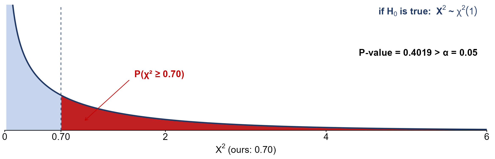
Why so little evidence? Compare the conditional distributions: \(25/305 = 0.082\) of the cell phone users had a violation, against \(45/450 = 0.100\) of the non-users and \(70/755 = 0.093\) of all drivers. The rows look alike, so every observed count sits close to its expected count, and \(X^2\) is small. (In these fictional data, the cell phone users actually had slightly fewer violations.)
From OpenStax Introductory Statistics 2e, Section 11.3, Example 11.6: the volunteer table from the Week 12 section on two-way tables. A sample of 839 adult volunteers was classified by type of volunteer and hours volunteered per week. Is the number of hours volunteered independent of the type of volunteer? (No \(\alpha\) is given, so use 0.05.)
| Type of volunteer | 1–3 hours | 4–6 hours | 7–9 hours | Row total |
|---|---|---|---|---|
| Community college students | 111 | 96 | 48 | 255 |
| Four-year college students | 96 | 133 | 61 | 290 |
| Nonstudents | 91 | 150 | 53 | 294 |
| Column total | 298 | 379 | 162 | 839 |
Step 1: the expected counts. Each cell is (row total)(column total)/839. For community college students working 1–3 hours, \[E_{11} = \frac{255 \times 298}{839} = 90.57.\] The whole table:
| Expected \(E\) | 1–3 hours | 4–6 hours | 7–9 hours |
|---|---|---|---|
| Community college students | \(\frac{255 \times 298}{839} = 90.57\) | \(\frac{255 \times 379}{839} = 115.19\) | \(\frac{255 \times 162}{839} = 49.24\) |
| Four-year college students | \(\frac{290 \times 298}{839} = 103.00\) | \(\frac{290 \times 379}{839} = 131.00\) | \(\frac{290 \times 162}{839} = 56.00\) |
| Nonstudents | \(\frac{294 \times 298}{839} = 104.42\) | \(\frac{294 \times 379}{839} = 132.81\) | \(\frac{294 \times 162}{839} = 56.77\) |
Check: each row of expected counts adds to its row total (for example, \(90.57 + 115.19 + 49.24 = 255\)), and the smallest expected count is 49.24, well above 5.
Step 2: the contributions \((O - E)^2/E\). For the top-left cell, \((111 - 90.57)^2/90.57 = 4.607\).
| \((O - E)^2/E\) | 1–3 hours | 4–6 hours | 7–9 hours |
|---|---|---|---|
| Community college students | 4.607 | 3.197 | 0.031 |
| Four-year college students | 0.476 | 0.030 | 0.447 |
| Nonstudents | 1.726 | 2.225 | 0.250 |
Now the five steps.
Assumptions. One random sample of 839 volunteers, each classified on both variables; every expected count is at least 5.
Hypotheses. \(H_0\): the number of hours volunteered is independent of the type of volunteer. \(H_A\): the number of hours volunteered depends on the type of volunteer.
Test statistic. Add all nine contributions: \[X^2_{obs} = 4.607 + 3.197 + 0.031 + 0.476 + 0.030 + 0.447 + 1.726 + 2.225 + 0.250 = 12.99\] \[df = (3 - 1)(3 - 1) = 4\]
P-value. In the \(df = 4\) row, \(11.143 < 12.99 < 14.860\), with upper tails 0.025 and 0.005, so \[0.005 < P(\chi^2 \geq 12.99 \mid H_0 \text{ true}) < 0.025\] Software gives 0.0113.
Decision. \(0.005 < \text{P-value} < 0.025 < \alpha = 0.05\) (software: \(0.0113 < 0.05\)): reject \(H_0\). There is convincing evidence that the number of hours volunteered is related to the type of volunteer.
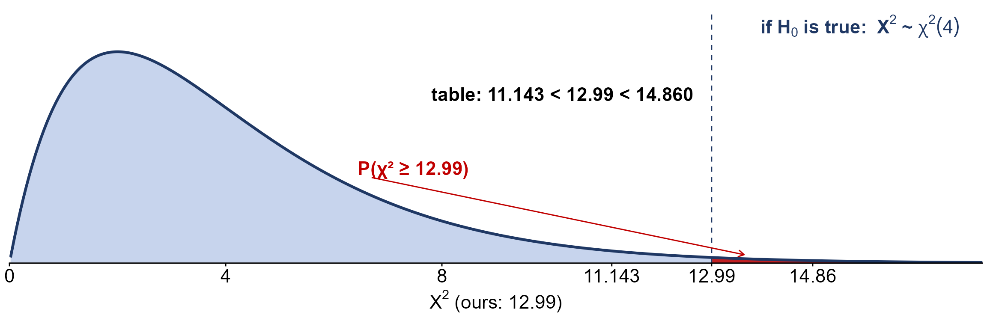
How are they related? The largest contributions are community college students working 1–3 hours (4.607: 111 observed, 90.57 expected) and 4–6 hours (3.197: 96 observed, 115.19 expected), and nonstudents working 4–6 hours (2.225: 150 observed, 132.81 expected). Community college students volunteer fewer hours than independence predicts and nonstudents more, which is what the conditional distributions in the Week 12 section on two-way tables suggested.
From OpenStax Introductory Statistics 2e, Section 11.3, Example 11.7:
De Anza College is interested in the relationship between anxiety level and the need to succeed in school. A random sample of 400 students took a test that measured anxiety level and need to succeed in school. The table shows the results. De Anza College wants to know if anxiety level and need to succeed in school are independent events.
| Need to succeed | High anxiety | Med-high anxiety | Medium anxiety | Med-low anxiety | Low anxiety | Row total |
|---|---|---|---|---|---|---|
| High need | 35 | 42 | 53 | 15 | 10 | 155 |
| Medium need | 18 | 48 | 63 | 33 | 31 | 193 |
| Low need | 4 | 5 | 11 | 15 | 17 | 52 |
| Column total | 57 | 95 | 127 | 63 | 58 | 400 |
(a) How many high-anxiety students are expected to have a high need to succeed, if the variables are independent? (b) How many are expected to have a low need to succeed and med-low anxiety? (c) Test whether anxiety level and the need to succeed are independent at \(\alpha = 0.05\).
Solution.
(a) \(E = \dfrac{155 \times 57}{400} = 22.09\), about 22 students. (b) \(E = \dfrac{52 \times 63}{400} = 8.19\), about 8 students.
(c) The full table of expected counts, then the contributions:
| Expected \(E\) | High anxiety | Med-high anxiety | Medium anxiety | Med-low anxiety | Low anxiety |
|---|---|---|---|---|---|
| High need | 22.09 | 36.81 | 49.21 | 24.41 | 22.48 |
| Medium need | 27.50 | 45.84 | 61.28 | 30.40 | 27.98 |
| Low need | 7.41 | 12.35 | 16.51 | 8.19 | 7.54 |
| \((O - E)^2/E\) | High anxiety | Med-high anxiety | Medium anxiety | Med-low anxiety | Low anxiety |
|---|---|---|---|---|---|
| High need | 7.549 | 0.731 | 0.291 | 3.629 | 6.924 |
| Medium need | 3.283 | 0.102 | 0.048 | 0.223 | 0.325 |
| Low need | 1.569 | 4.374 | 1.839 | 5.663 | 11.869 |
Assumptions. A random sample of 400 students; the smallest expected count is 7.41 (low need, high anxiety), so every expected count is at least 5.
Hypotheses. \(H_0\): anxiety level and the need to succeed are independent. \(H_A\): they are not independent.
Test statistic. The 15 contributions add to \(X^2_{obs} = 48.42\), with \(df = (3 - 1)(5 - 1) = 8\).
P-value. The largest entry in the \(df = 8\) row is 27.868 (0.0005), and \(48.42 > 27.868\), so \(P(\chi^2 \geq 48.42 \mid H_0 \text{ true}) < 0.0005\).
Decision. \(\text{P-value} < 0.0005 < \alpha = 0.05\): reject \(H_0\). Anxiety level and the need to succeed in school are related. The largest contributions are low need with low anxiety (11.87: 17 observed, 7.54 expected) and high need with high anxiety (7.55: 35 observed, 22.09 expected): students with a higher need to succeed tend to report higher anxiety.
A test for homogeneity asks whether two or more populations have the same distribution of one categorical variable. The data come from a separate random sample from each population, and each person is classified on that one variable. The table has a row for each population and a column for each category of the response.
\[H_0: \text{the populations have the same distribution of the variable}\] \[H_A: \text{the distributions are not all the same}\]
The arithmetic is identical to the test of independence: \[E_{ij} = \frac{(\text{row } i \text{ total}) \times (\text{column } j \text{ total})}{n}, \qquad X^2_{obs} = \sum_{\text{all cells}} \frac{(O_{ij} - E_{ij})^2}{E_{ij}}, \qquad df = (r - 1)(c - 1),\] the P-value is the upper tail, and every expected count must be at least 5.
So what is the difference? The design, and therefore the question:
It is the categorical version of the jump from a one-sample test to a two-sample test: the rows are the groups we compare. With two rows, it extends the test of \(p_1 = p_2\) to a response with more than two categories.
A note on the textbook: Section 11.4 of the book writes the homogeneity df as “number of columns \(-\) 1”, because all of its examples compare exactly two populations. With \(r = 2\) rows that is the same as \((r - 1)(c - 1) = (2 - 1)(c - 1) = c - 1\). Use \((r - 1)(c - 1)\); it works for any number of populations, and it is the formula in the book’s Formula Review.
From OpenStax Introductory Statistics 2e, Section 11.4, Example 11.8:
Do men and women college students have the same distribution of living arrangements? Use a level of significance of 0.05. Suppose that 250 randomly selected men college students and 300 randomly selected women college students were asked about their living arrangements: dormitory, apartment, with parents, other. The results are shown in the table. Do male and female college students have the same distribution of living arrangements?
| Dormitory | Apartment | With parents | Other | Row total | |
|---|---|---|---|---|---|
| Men | 72 | 84 | 49 | 45 | 250 |
| Women | 91 | 86 | 88 | 35 | 300 |
| Column total | 163 | 170 | 137 | 80 | 550 |
Two separate random samples (250 men, 300 women) and one variable (living arrangement), so this is a test for homogeneity.
Expected counts. For men in a dormitory, \(E = \dfrac{250 \times 163}{550} = 74.09\). The rest:
| Expected \(E\) | Dormitory | Apartment | With parents | Other |
|---|---|---|---|---|
| Men | 74.09 | 77.27 | 62.27 | 36.36 |
| Women | 88.91 | 92.73 | 74.73 | 43.64 |
| \((O - E)^2/E\) | Dormitory | Apartment | With parents | Other |
|---|---|---|---|---|
| Men | 0.059 | 0.586 | 2.829 | 2.051 |
| Women | 0.049 | 0.488 | 2.357 | 1.709 |
Assumptions. Independent random samples of men and women; the smallest expected count is 36.36, well above 5.
Hypotheses. \(H_0\): the distribution of living arrangements is the same for men and women college students. \(H_A\): the distributions are not the same.
Test statistic. \[X^2_{obs} = 0.059 + 0.586 + 2.829 + 2.051 + 0.049 + 0.488 + 2.357 + 1.709 = 10.13\] \[df = (2 - 1)(4 - 1) = 3\]
P-value. In the \(df = 3\) row, \(9.348 < 10.13 < 12.838\), with upper tails 0.025 and 0.005, so \[0.005 < P(\chi^2 \geq 10.13 \mid H_0 \text{ true}) < 0.025\] Software gives 0.0175.
Decision. \(0.005 < \text{P-value} < 0.025 < \alpha = 0.05\) (software: \(0.0175 < 0.05\)): reject \(H_0\). There is convincing evidence that men and women college students do not have the same distribution of living arrangements.
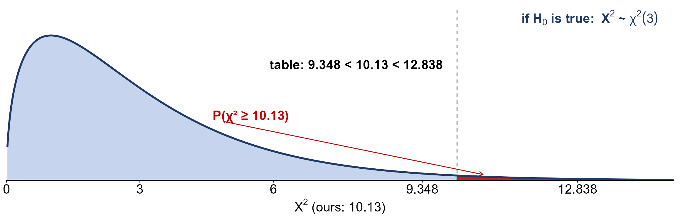
As the book points out, the test itself only says the distributions differ, not how. The contributions show where: “with parents” (2.829 and 2.357) and “other” (2.051 and 1.709). Women are more likely to live with their parents (\(88/300 = 0.293\) against \(49/250 = 0.196\) of men) and less likely to have some other arrangement (\(35/300 = 0.117\) against \(45/250 = 0.180\)).
From OpenStax Introductory Statistics 2e, Section 11.4, Example 11.9:
Both before and after a recent earthquake, surveys were conducted asking voters which of the three candidates they planned on voting for in the upcoming city council election. Has there been a change since the earthquake? Use a level of significance of 0.05.
| Perez | Chung | Stevens | Row total | |
|---|---|---|---|---|
| Before | 167 | 128 | 135 | 430 |
| After | 214 | 197 | 225 | 636 |
| Column total | 381 | 325 | 360 | 1066 |
Solution. The two surveys are separate samples of voters taken at two times, with one variable (candidate preference): a test for homogeneity.
Assumptions. Two independent random samples (430 before, 636 after). The smallest expected count is \(430 \times 325 / 1066 = 131.10\), so all are at least 5.
Hypotheses. \(H_0\): the distribution of voter preferences was the same before and after the earthquake. \(H_A\): it was not the same.
Test statistic. The expected counts and contributions are
| Expected \(E\) | Perez | Chung | Stevens |
|---|---|---|---|
| Before | 153.69 | 131.10 | 145.22 |
| After | 227.31 | 193.90 | 214.78 |
| \((O - E)^2/E\) | Perez | Chung | Stevens |
|---|---|---|---|
| Before | 1.153 | 0.073 | 0.719 |
| After | 0.780 | 0.049 | 0.486 |
\[X^2_{obs} = 1.153 + 0.073 + 0.719 + 0.780 + 0.049 + 0.486 = 3.26, \qquad df = (2 - 1)(3 - 1) = 2\]
P-value. In the \(df = 2\) row, \(3.219 < 3.26 < 3.794\), with upper tails 0.2 and 0.15, so \(0.15 < P(\chi^2 \geq 3.26 \mid H_0 \text{ true}) < 0.2\). Software gives 0.1959.
Decision. \(\text{P-value} = 0.1959 > \alpha = 0.05\): fail to reject \(H_0\). The data do not give convincing evidence that the distribution of voter preferences changed after the earthquake.
This section is optional reading. McNemar’s test is not on the exams.
Every chi-square test so far has counted each individual once. Often, though, a yes/no variable is recorded twice on the same subjects:
These are paired (dependent) data, just like the matched pairs of Week 12, except that the response is categorical instead of quantitative. Neither the test of independence nor the test for homogeneity applies:
With \(n\) subjects each measured twice, every subject falls into exactly one of four cells:
| Second: yes | Second: no | Total | |
|---|---|---|---|
| First: yes | \(a\) | \(b\) | \(a + b\) |
| First: no | \(c\) | \(d\) | \(c + d\) |
| Total | \(a + c\) | \(b + d\) | \(n\) |
The proportions answering “yes” the first and second time are \[\hat{p}_1 = \frac{a + b}{n}, \qquad \hat{p}_2 = \frac{a + c}{n}, \qquad\text{so}\qquad \hat{p}_1 - \hat{p}_2 = \frac{(a + b) - (a + c)}{n} = \frac{b - c}{n}.\]
The difference between the two proportions depends only on the discordant pairs. The \(a + d\) subjects who answered the same way twice cancel out. They tell us nothing about change, however many of them there are.
McNemar’s test is the sign test. Each discordant pair is a “+” (yes then no) or a “−” (no then yes), and the concordant pairs are ties, which the sign test drops. McNemar’s statistic is the large-sample version of the sign test on those signs.
A nose-and-throat swab collected by a nurse is the standard sample for a COVID-19 PCR test. Spitting into a tube is easier, cheaper and safer for the nurse. But does saliva find the virus as often as the swab does?
In October and November 2020, 403 adults came to a laboratory in Florianópolis, Brazil, for a routine COVID-19 PCR test. Each gave a nurse-collected oro/nasopharyngeal swab and then, right afterwards, their own saliva sample. Both samples were tested by PCR. Three saliva results were invalid, leaving 400 patients with a result on both samples.
Source: de Oliveira et al. (2021), “SARS-CoV-2 saliva testing is a useful tool for Covid-19 diagnosis”, Journal of Virological Methods 296: 114241, Table 1 (saliva protocol T).
| Swab positive | Swab negative | Total | |
|---|---|---|---|
| Saliva positive | 119 | 5 | 124 |
| Saliva negative | 33 | 243 | 276 |
| Total | 152 | 248 | 400 |
These are paired data: there are 800 test results but only 400 patients, and each patient’s two results belong together. A patient with a high viral load tends to test positive on both. Here “yes” means a positive test, measurement 1 is saliva and measurement 2 is the swab, so \[b = 5 \text{ (saliva positive, swab negative)}, \qquad c = 33 \text{ (saliva negative, swab positive)}.\]
The two proportions. \[\hat{p}_1 = \frac{119 + 5}{400} = \frac{124}{400} = 0.31 \text{ (saliva)}, \qquad \hat{p}_2 = \frac{119 + 33}{400} = \frac{152}{400} = 0.38 \text{ (swab)}\] and \(\hat{p}_1 - \hat{p}_2 = (5 - 33)/400 = -0.07\). Saliva found 7 percentage points fewer positives. Could a difference this large happen by chance if the two samples were equally sensitive?
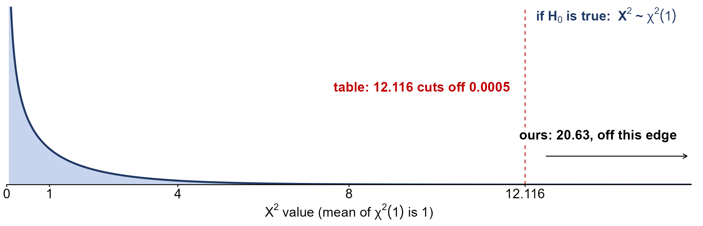
Two things this example shows.
A note on software. Many programs, including R’s
mcnemar.test(), use a continuity correction by default:
\((|b - c| - 1)^2/(b + c) = 27^2/38 =
19.18\). It makes little difference when \(b + c\) is large, and our conclusion is the
same. In this course we use the uncorrected formula.
A second study compared a self-collected gargle sample with the nurse-collected swab.
Between 15 and 28 April 2021, patients referred for COVID-19 testing at University Hospital Olomouc, Czech Republic, gave a nasopharyngeal swab and a self-collected gargle lavage sample. Both were tested by PCR, giving 494 paired results.
Source: Bouska et al. (2022), “Evaluation of non-invasive gargle lavage sampling for the detection of SARS-CoV-2 using rRT-PCR or antigen assay”, Viruses 14(12): 2829, Table 2.
| Swab positive | Swab negative | Total | |
|---|---|---|---|
| Gargle positive | 255 | 20 | 275 |
| Gargle negative | 20 | 199 | 219 |
| Total | 275 | 219 | 494 |
Test at \(\alpha = 0.05\) whether the gargle and the swab detect COVID-19 equally often.
Solution.
These counts are real: the paper reports exactly 20 positives on each side. Contrast this with the saliva study, where the discordant pairs were split 33 to 5.
(OpenStax Section 11.5.) All four tests compute an \(X^2\) and use the upper tail of a chi-square distribution. To choose between them, ask how many samples there are, how many variables were measured, and whether each subject was measured twice.
| Test | Design | \(H_0\) | Statistic | \(df\) |
|---|---|---|---|---|
| Goodness of fit | one sample, one categorical variable | the population fits the claimed distribution (\(p_i = p_{i,0}\) for every category) | \(\sum (O - E)^2/E\) with \(E = n\,p_{i,0}\) | \(k{-}1\) |
| Independence | one sample, two categorical variables on each individual | the two variables are independent | \(\sum (O - E)^2/E\) with \(E = \text{row} \times \text{column} / n\) | \((r{-}1)(c{-}1)\) |
| Homogeneity | a separate sample from each of two or more populations, one categorical variable | the populations have the same distribution | \(\sum (O - E)^2/E\) with \(E = \text{row} \times \text{column} / n\) | \((r{-}1)(c{-}1)\) |
| McNemar (optional) | one sample, the same yes/no variable measured twice on each individual (paired) | \(p_1 = p_2\): the proportion answering “yes” is the same both times | \((b - c)^2/(b + c)\) | \(1\) |
The three chi-square tests need every expected count to be at least 5. McNemar’s test needs at least 10 discordant pairs.
Practice: which test? For each study, name the test.
Answers. (1) Independence: one sample, two variables measured on each voter. (2) Goodness of fit: one variable compared with a claimed distribution, with \(E = 300 \times 0.2 = 60\) for each color and \(df = 4\). (3) Homogeneity: two separately sampled populations, one variable, with \(df = (2 - 1)(4 - 1) = 3\). (4) McNemar: the same 150 students answer the same yes/no question twice, so the answers are paired. Only the students who changed their minds enter the statistic.
Fisher’s exact test, for a \(2 \times 2\) table whose expected counts are too small for the chi-square test, is written up as optional reading under Resources → Extras → Fisher’s Exact Test.
A chi-square test answers a yes-or-no question: do the data give convincing evidence of some association? It does not say how strong the association is, because \(X^2\) grows with the sample size.
Take the living-arrangements example: \(n = 550\), \(X^2_{obs} = 10.13\), P-value \(= 0.0175\). Now imagine the same study with ten times as many students and exactly the same percentages: every observed count multiplied by 10. Every expected count is also multiplied by 10, so every \((O - E)^2/E\) term is multiplied by \(10^2/10 = 10\): \[n = 5500: \qquad X^2_{obs} = 10 \times 10.13 = 101.3, \qquad \text{P-value} < 0.0005.\] The association did not get any stronger, since 19.6% of the men and 29.3% of the women still live with their parents. Only the evidence grew, because a larger sample makes the same difference harder to blame on chance. We need a separate measure of strength that does not grow with \(n\).
Cramér’s V rescales \(X^2\) to run from 0 to 1: \[V = \sqrt{\frac{X^2_{obs}}{n\,(k - 1)}}, \qquad k = \text{the smaller of the number of rows and the number of columns.}\]
How large is large? A common rough guide (Cohen, 1988) depends on \(k - 1\):
| \(k - 1\) | Small | Medium | Large |
|---|---|---|---|
| 1 (any table with two rows or two columns) | 0.10 | 0.30 | 0.50 |
| 2 | 0.07 | 0.21 | 0.35 |
| 3 | 0.06 | 0.17 | 0.29 |
These cut-offs are only a guide. Whether an association matters depends on the context.
Living arrangements (a \(2 \times 4\) table, so \(k = 2\)): \[V = \sqrt{\frac{10.13}{550 \times 1}} = 0.136.\] That is a small association. Men and women do differ in where they live (the test rejected \(H_0\)), but not by much.
Speeding and cell phones (a \(2 \times 2\) table, so \(k = 2\)): \[V = \sqrt{\frac{0.703}{755 \times 1}} = 0.031.\] That is negligible, which fits the test’s conclusion that there is no evidence of an association.
Practice: anxiety and the need to succeed. The anxiety example has a \(3 \times 5\) table of \(n = 400\) students and \(X^2_{obs} = 48.42\). Find Cramér’s V and describe the strength of the association.
Solution. \(k = 3\) (three rows, five columns), so \(k - 1 = 2\), and \[V = \sqrt{\frac{48.42}{400 \times 2}} = 0.246.\] For \(k - 1 = 2\), 0.246 is between the medium (0.21) and large (0.35) guides: a medium association between anxiety and the need to succeed.
An aside on the saliva study. Treated as a test of independence, the saliva-and-swab table in the optional McNemar section has \(X^2 = 256.3\) and \(V = \sqrt{256.3/400} = 0.80\), a large association. That number measures how strongly the two tests agree. It says nothing about whether one test finds more positives than the other, which is the question McNemar’s test answers.
Cramér’s V measures the association between two categorical variables. For two quantitative variables we start with a picture.
A scatterplot shows the relationship between two quantitative variables measured on the same individuals. Each individual is one point \((x, y)\). The explanatory (independent) variable \(x\) goes on the horizontal axis, and the response (dependent) variable \(y\) goes on the vertical axis. When neither variable explains the other, either can go on either axis.
To describe a scatterplot, look at its
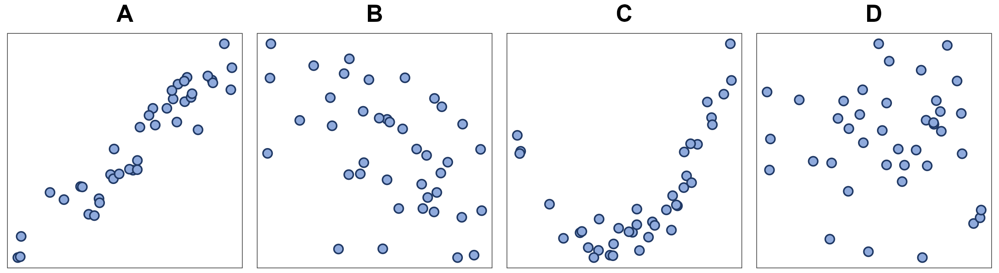
Plot A shows a strong, positive, linear relationship and plot B a moderate, negative, linear one. Plot C is curved: \(y\) falls and then rises steeply as \(x\) increases. Plot D shows no association.
The 16 National League baseball teams each played 162 games in the 2010 season. For each team the data give the number of runs it scored, its runs per game (runs divided by 162), its ERA (earned run average: the runs its pitchers allowed per nine innings, so a lower ERA is better) and the number of games it won. Here \(n = 16\).
| Team | Runs | Runs per game | ERA | Wins |
|---|---|---|---|---|
| Cincinnati | 790 | 4.88 | 4.01 | 91 |
| Philadelphia | 772 | 4.77 | 3.67 | 97 |
| Colorado | 770 | 4.75 | 4.14 | 83 |
| Milwaukee | 750 | 4.63 | 4.58 | 77 |
| Atlanta | 738 | 4.56 | 3.56 | 91 |
| St. Louis | 736 | 4.54 | 3.57 | 86 |
| Florida | 719 | 4.44 | 4.08 | 80 |
| Arizona | 713 | 4.40 | 4.81 | 65 |
| San Francisco | 697 | 4.30 | 3.36 | 92 |
| Chicago Cubs | 685 | 4.23 | 4.18 | 75 |
| LA Dodgers | 667 | 4.12 | 4.01 | 80 |
| San Diego | 665 | 4.10 | 3.39 | 90 |
| NY Mets | 656 | 4.05 | 3.70 | 79 |
| Washington | 655 | 4.04 | 4.13 | 69 |
| Houston | 611 | 3.77 | 4.09 | 76 |
| Pittsburgh | 587 | 3.62 | 5.00 | 57 |
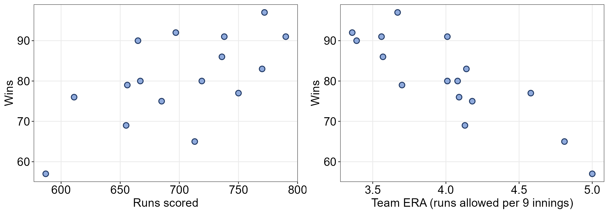
Runs and wins have a positive, linear, moderate relationship: teams that score more runs tend to win more games, with a fair amount of scatter. ERA and wins have a negative, linear, strong relationship: teams whose pitchers allow fewer runs tend to win more.
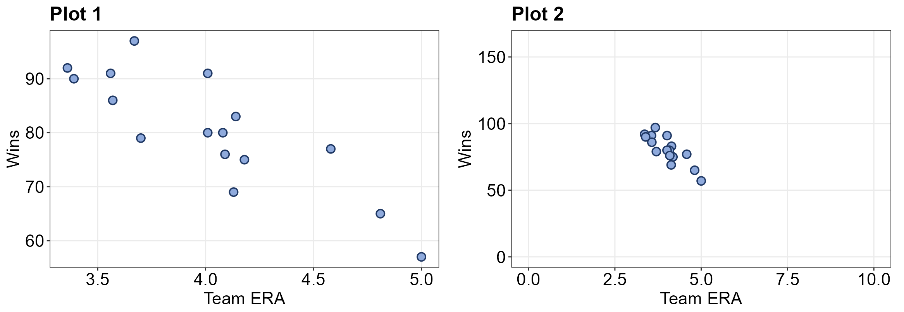
Which plot shows the stronger relationship? Most people say Plot 2. But the two plots show exactly the same 16 teams. Only the axes changed: Plot 2 squeezes the points into a small corner, which makes them look tightly packed. How strong a relationship looks depends on how it is drawn, so, as with every graph in this course, we follow the picture with a number.
The covariance of \(x\) and \(y\) is the average product of their deviations from their means: \[\text{Cov}(X, Y) = \frac{\sum (x_i - \bar{x})(y_i - \bar{y})}{n - 1}.\] When the association is positive, points above average in \(x\) tend to be above average in \(y\) (both deviations positive), and points below average in \(x\) tend to be below average in \(y\) (both negative). Either way the product is positive, so the covariance is positive. When the association is negative, the deviations tend to have opposite signs, and the covariance is negative.
The problem with covariance: it depends on the units. For the 2010 teams, \[\text{Cov}(\text{runs}, \text{wins}) = 392.7, \qquad \text{Cov}(\text{runs per game}, \text{wins}) = 2.42.\] These are the same teams and the same relationship. Runs per game is runs divided by 162, so the covariance is 162 times smaller (\(392.7/162 = 2.42\)). Measured in runs, the covariance looks large; measured in runs per game, it looks small. Its units (“runs times wins”) are not meaningful either. A measure of strength should not change when we change units.
The fix is to standardize each variable before multiplying. The correlation coefficient is the covariance of the \(z\)-scores: \[r = \frac{1}{n - 1} \sum \left(\frac{x_i - \bar{x}}{s_x}\right)\left(\frac{y_i - \bar{y}}{s_y}\right) = \frac{\text{Cov}(X, Y)}{s_x \, s_y}.\] It is often called Pearson’s correlation, after Karl Pearson, who developed it around 1900. Its properties:
For the 2010 teams, \(r = 0.624\) for runs and wins (moderate, positive) and \(r = -0.850\) for ERA and wins (strong, negative), matching the descriptions of the two scatterplots.
Software computes \(r\) for real data sets, but working a tiny example shows what the formula does. Take four of the 2010 teams:
| Team | Runs \(x\) | Wins \(y\) | \(z_x = (x - \bar{x})/s_x\) | \(z_y = (y - \bar{y})/s_y\) | \(z_x \, z_y\) |
|---|---|---|---|---|---|
| Philadelphia | 772 | 97 | 1.033 | 0.976 | 1.008 |
| Arizona | 713 | 65 | 0.269 | −0.647 | −0.174 |
| San Francisco | 697 | 92 | 0.062 | 0.723 | 0.044 |
| Pittsburgh | 587 | 57 | −1.363 | −1.052 | 1.434 |
| Mean | 692.25 | 77.75 | Sum: 2.312 | ||
| SD | 77.22 | 19.72 |
For Philadelphia, \(z_x = (772 - 692.25)/77.22 = 1.033\) and \(z_y = (97 - 77.75)/19.72 = 0.976\), so the product is \(1.008\). Philadelphia is above both means and Pittsburgh is below both, so their products are large and positive. Arizona scored above-average runs but won below-average games, so its product is negative. Then \[r = \frac{2.312}{4 - 1} = 0.77.\]
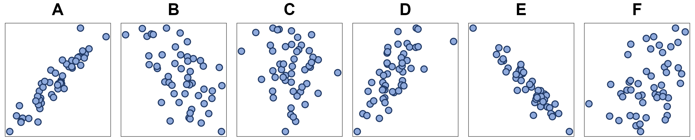
Guess \(r\) for each plot before reading on.
Answers. A: 0.93. B: \(-0.55\). C: \(-0.14\). D: 0.71. E: \(-0.94\). F: 0.40.
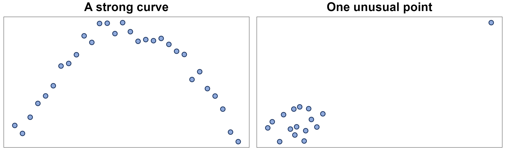
The correlation \(r\) describes a sample. Is the linear relationship we see in the sample strong enough to conclude that there is one in the population, or could \(r\) be this far from 0 by chance? The textbook calls this testing the significance of the correlation coefficient.
From OpenStax Introductory Statistics 2e, Section 12.3, Example 12.6 and Section 12.4:
A random sample of 11 statistics students produced the following data, where \(x\) is the third exam score out of 80, and \(y\) is the final exam score out of 200. Can you predict the final exam score of a random student if you know the third exam score?
| Student | 1 | 2 | 3 | 4 | 5 | 6 | 7 | 8 | 9 | 10 | 11 |
|---|---|---|---|---|---|---|---|---|---|---|---|
| Third exam \(x\) | 65 | 67 | 71 | 71 | 66 | 75 | 67 | 70 | 71 | 69 | 69 |
| Final exam \(y\) | 175 | 133 | 185 | 163 | 126 | 198 | 153 | 163 | 159 | 151 | 159 |
The line of best fit is: \(\hat{y} = -173.51 + 4.83x\) with \(r = 0.6631\) and there are \(n = 11\) data points. Can the regression line be used for prediction? Given a third exam score (\(x\) value), can we use the line to predict the final exam score (predicted \(y\) value)?
\(H_0: \rho = 0\)
\(H_a: \rho \neq 0\)
\(\alpha = 0.05\)
The regression line comes later in the course. Here the question is whether the correlation is significantly different from zero. The book finds the P-value with a calculator; the table-based solution below is ours.
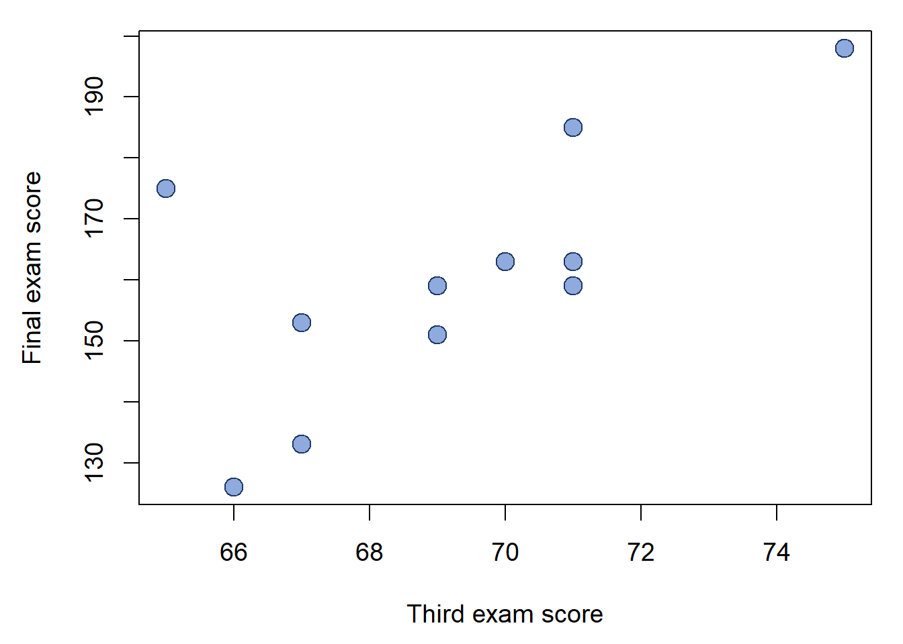
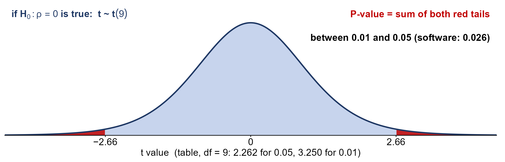
The book’s other method. Section 12.4 also gives a table of critical values of \(r\): for \(df = 9\), a sample correlation beyond \(\pm 0.602\) is significant at \(\alpha = 0.05\). Since \(0.6631 > 0.602\), it reaches the same decision. That table is just the \(t\) test solved for \(r\), so in this course we use \(t_{obs}\) and the \(t\) table.
Baseball analysts say that scoring runs is how teams win. For the 16 National League teams in 2010, runs scored and games won have \(r = 0.624\). Test at \(\alpha = 0.05\) whether runs and wins are linearly related.
A team’s ERA is the number of runs its pitchers allow per nine innings, so a lower ERA is better. A manager claims that teams with lower ERAs win more games. For the 16 National League teams in 2010, ERA and wins have \(r = -0.850\). Test the manager’s claim at \(\alpha = 0.05\).
Solution.
As with the chi-square tests, a small P-value says the correlation is probably not zero. It does not say the correlation is large.
Report \(r\) to describe how strong the relationship is, and the test to say whether it is distinguishable from zero.
Data/NL_team_statistics.csv). The standings match the 2010
season (Philadelphia 97 wins, San Francisco 92, Cincinnati 91,
Pittsburgh 57).assets/make_lecture32_figures.R).